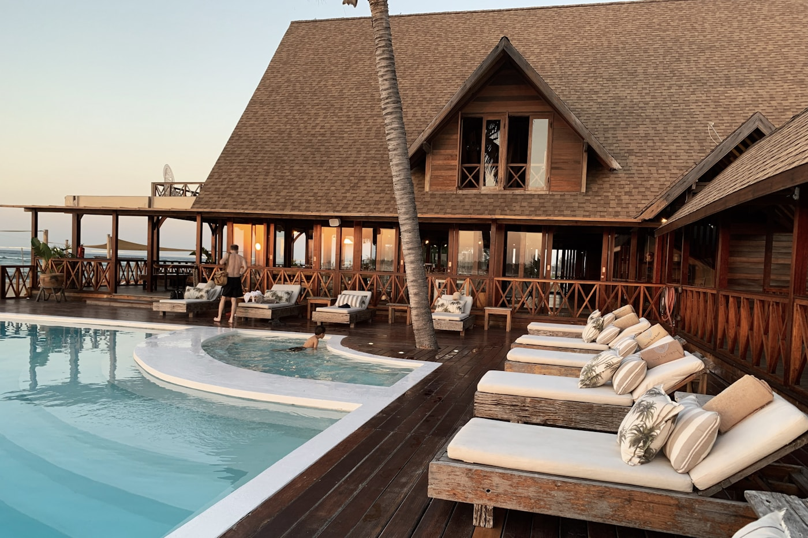
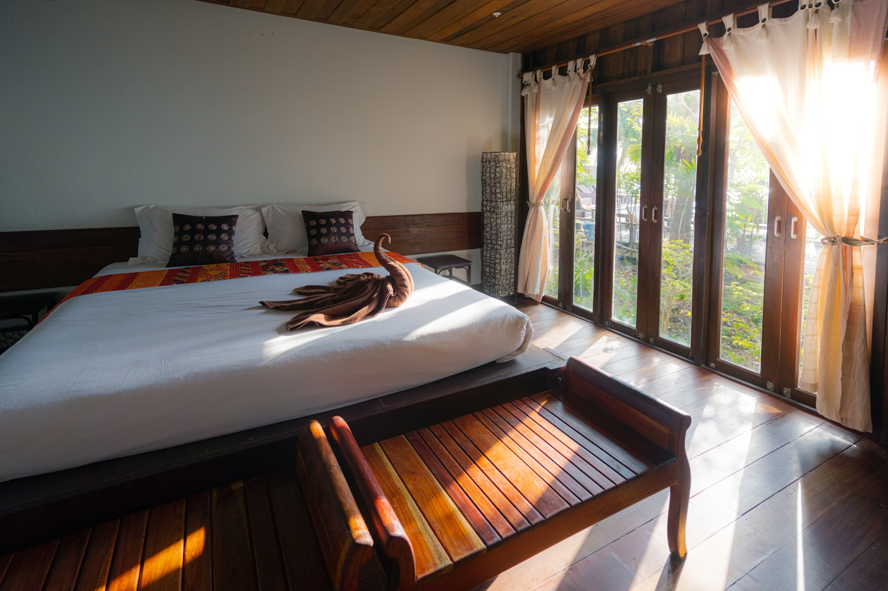
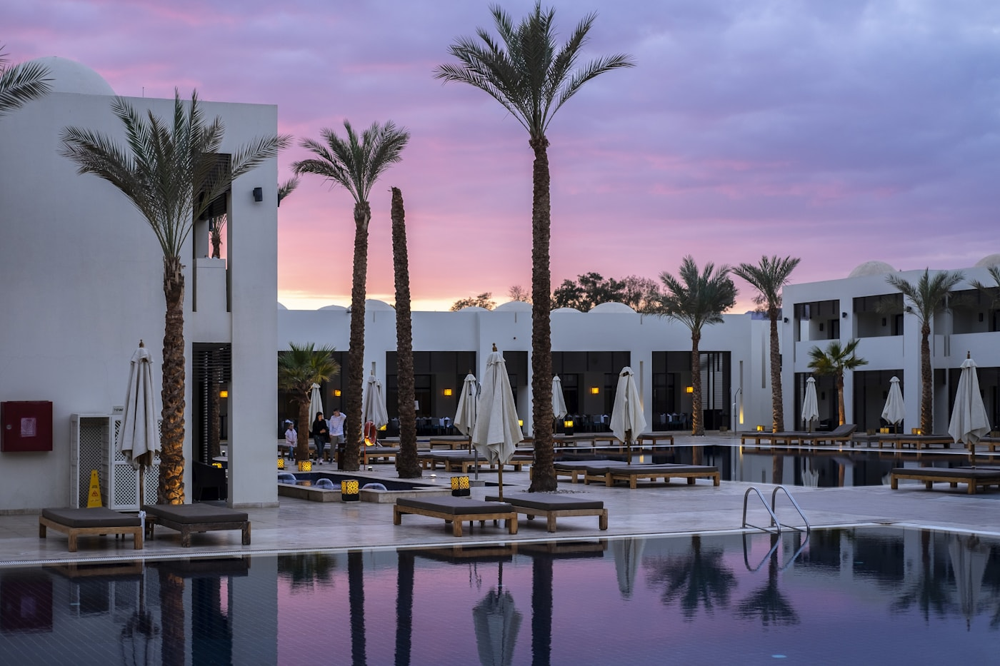
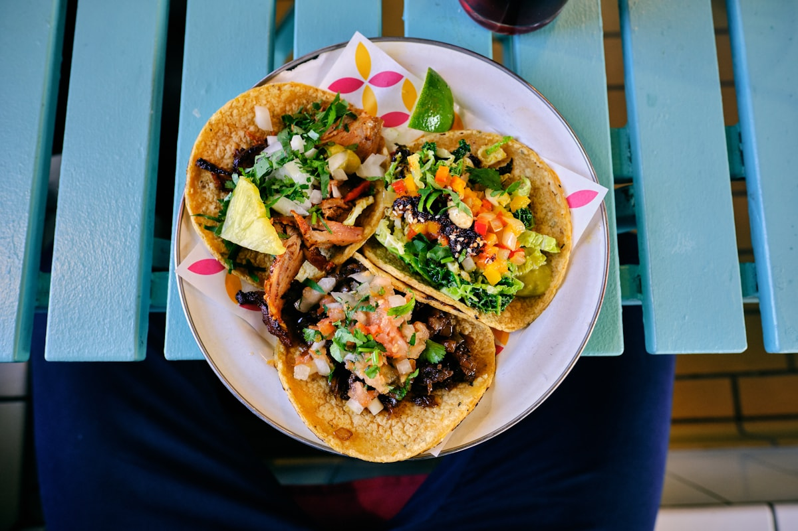
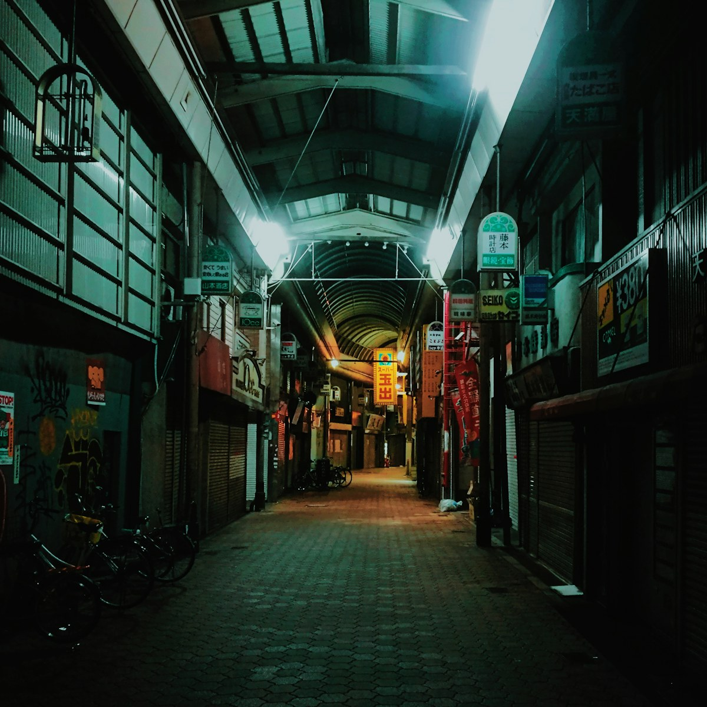
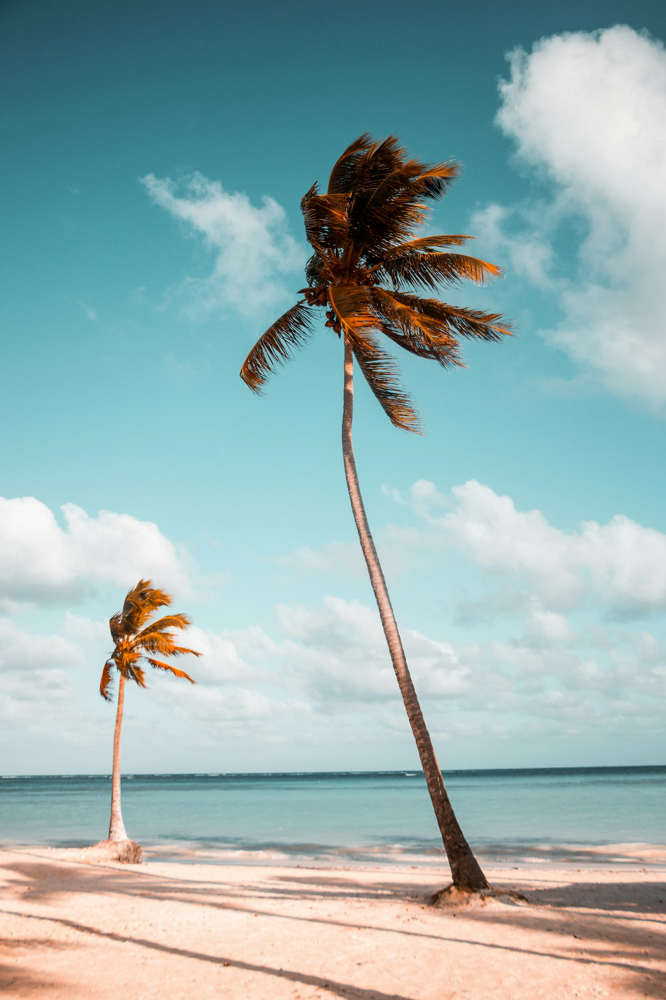
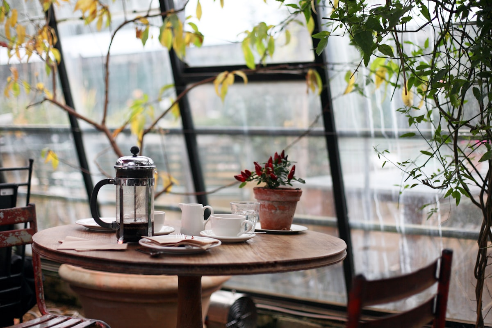
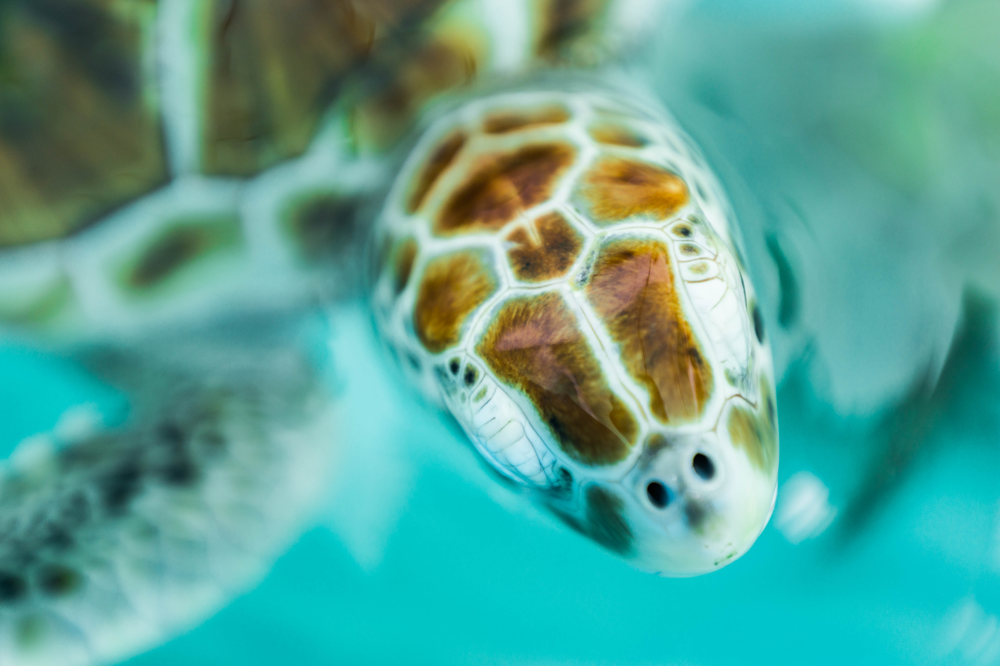

Book your stay
Our room blocks are open through June 30, 2027.

Pack your sunglasses
October 7–10, 2027 · Isla Mujeres, Mexico
We are getting married by the sea.
Four sun-soaked days. One very good reason to celebrate.
Welcome to the island
Isla Mujeres has always felt like an exhale to us—warm water, tiny streets, and dinners that stretch late into the night. We can’t wait to share it with the people we love most.
This guide has everything you’ll need, from the ferry to the farewell brunch. Save it to your phone and come ready for sun, music, and a little adventure.
See you in paradise, S + C
Before you go
Our room blocks are open through June 30, 2027.
Choose Puerto Juárez for the fastest island crossing.
Your event-day details, simplified for easy access.
Check that it is valid through your travel dates and save a digital copy.
Friday, October 8 by 2:00 p.m. for a relaxed ferry connection.
Fly into Cancún International Airport and follow signs to ground transport.
Use the Puerto Juárez terminal. Keep your ticket for the return crossing.
Carry a few pesos for taxis and tips. Most hotels and restaurants accept cards.
Ask your carrier about Mexico roaming and save important numbers with +52.
Expect warm, humid days around 82–88°F with quick passing showers.
Bring reef-friendly SPF, a light layer, swimwear, and grass-friendly shoes.
Getting there
Fly into Cancún, transfer to the ferry terminal, then enjoy a breezy 20-minute crossing.
Book CUN and allow at least two hours between landing and your ferry.
A pre-booked car takes about 30 minutes. Avoid unmarked airport taxis.
Ferries run throughout the day. Keep your ticket for the return trip.
Sample airport transfer: Isla Welcome Car Service · +1 (555) 014-0118 · fictional contact
Where to stay
Room blocks are fictional and shown for demonstration. In a live site, booking links and rates would update here.

The primary wedding hotel, with an ocean courtyard and the main shuttle stop.
Best for: staying with the groupSample block: “Martinez–Reed” · book by June 30
A serene boutique option with a rooftop pool and easy walk to El Centro.
Best for: quiet morningsSample block: “S + C Weekend” · book by June 30
Spacious suites, kitchenettes, and a relaxed pool close to the ferry.
Best for: families and longer staysIndependent booking · no room block requiredThe weekend
Welcome to the island
7:00 p.m. · Miramar Rooftop
Drop in after you settle in. Light bites, tropical drinks, and no speeches—just hugs. Walk from Casa Arena or take a short red taxi.
Optional gathering
11:00 a.m. · Playa Norte
Come and go as you please. Look for our striped umbrellas near the north end; taxis and golf carts can drop you at the beach entrance.
All guests
6:30 p.m. · Terraza Coral
Dinner, music, and a first toast to the weekend. Shuttles leave all three suggested hotels beginning at 6:00 p.m.
Wedding day
5:30 p.m. · Casa del Mar Azul
Guest shuttles begin at 4:30 p.m. from Casa Arena, Hotel Luna Azul, and Marina Suites. Please be seated by 5:15.
The celebration
7:00 p.m. · Casa del Mar Azul
Cocktails flow straight into dinner and dancing beneath the covered terrace. Return shuttles begin at 10:30 p.m.
One more toast
10:30 a.m. · Playa Norte
Coffee, chilaquiles, and a final swim. Come whenever you wake up; shoes are truly optional.
Sofia & Cameron’s island list
Tap the heart to make a tiny favorites list on this device.

Order whatever came off the grill last.

Go late for golden water and an easy sail home.

Calm water, soft sand, sunset perfection.

Iced coffee and a slow start before exploring.

A gentle, family-friendly island stop.
Small-batch textiles, ceramics, and gifts near the square.
Music, mezcal, and tacos once the island cools down.
0 island favorites saved
Pack with us
Check things off as they land in your suitcase. Your list stays saved on this device.
What to wear
Linen, breezy dresses, elevated separates, sandals, and any colors you love.
Festive dresses, suits, and polished separates. Bright inspiration is welcome, never required.
Suits, long dresses, and elevated separates. Choose shoes comfortable on grass.
Screenshot this
Casa del Mar Azul
Carretera Garrafón 22, Isla Mujeres, Q.R.
Casa Arena · main shuttle stop · fictional room block.
Ultramar from Puerto Juárez. Arrive 20 minutes before departure.
Isla Welcome Car Service
+1 (555) 014-0118
Demo concierge
+1 (555) 014-2027
For urgent travel help, contact your hotel desk or local authorities.
Dial 911 in Mexico for police, fire, or medical emergencies.
Warm and humid, 82–88°F. Current forecast ↗
After the last dance
Share the blurry dance-floor photos, ferry selfies, and everything in between. This sample demonstrates how a guest upload prompt could feel.
A real wedding site could send photos and notes directly to the couple’s private gallery.
Good to know
Fly into Cancún International Airport, code CUN. From there, continue by car to Puerto Juárez and ferry to Isla Mujeres.
Yes. Guests traveling from the U.S. need a valid passport. Check current entry requirements well before departure.
Take a pre-booked car or official airport transfer to Puerto Juárez, then ride the 20-minute passenger ferry to Isla Mujeres.
No. Passenger cars are unnecessary on the island. Red taxis, golf carts, walking, and our event shuttles are easier.
Yes. Shuttles will serve the three suggested hotels for Friday dinner and all Saturday wedding events.
Bring a small amount of Mexican pesos for taxis and tips. Cards are accepted at most hotels and restaurants.
October is warm and humid, usually 82–88°F. Brief tropical showers are possible, so pack a light layer.
Children named on your invitation are warmly included. Please refer to your RSVP for the guests in your party.
Thursday is resort casual, Friday dinner is colorful cocktail, and Saturday is coastal formal with grass-friendly shoes.
Use the fictional demo concierge number shown in Quick Info. A real guide would list the couple’s designated point person here.
This is a fictional sample created by Tiny Site Studios to demonstrate a fully custom destination wedding experience.
One island · four days · our favorite people